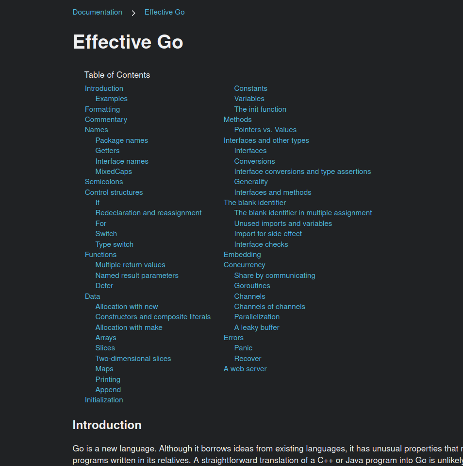
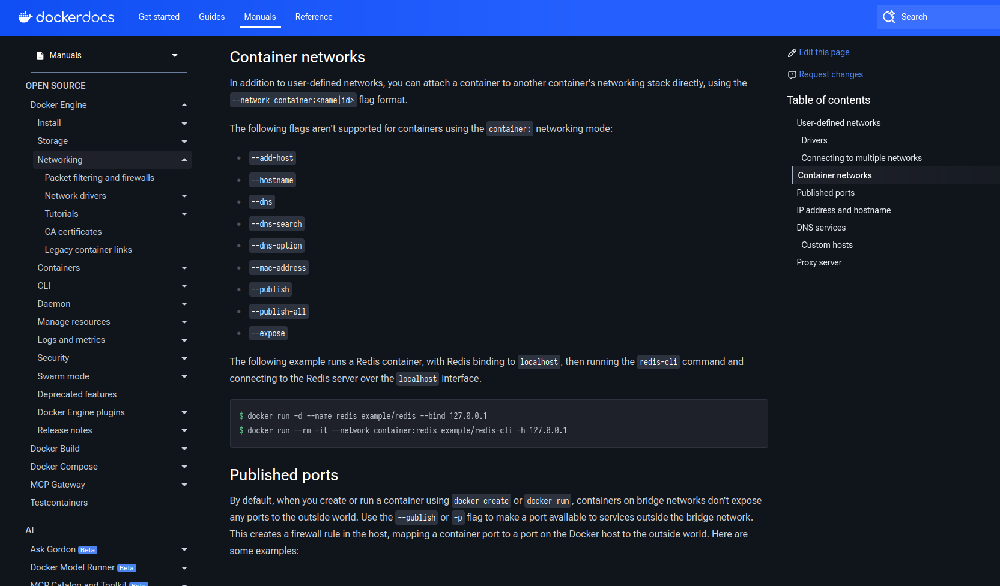

The importance of a good Table-of-Contents implementation
I’ve always found it invaluable to have a clear, complete and omnipresent overview of any text-based resource I’m absorbing. Having a “bird’s eye view” of all available information aleviates the feeling that I may have missed or skipped over something, and it helps me discern the way a section I’m reading at any given moment relates to the rest of the resource. It gives me a sense of security that I can’t really describe.
It’s part of the reason I love the concept of an infinite canvas so much - it presents information in a visual manner where, by zooming and panning, you define the scope of information visible at any given time. You aren’t constrained by the structure imposed by the original author.
For better or worse however (it’s debatable how effective an infinite canvas is at transferring knowledge - right tool for the job and all that), the written content I consume most often: articles, blog posts, tutorials, documentation, manuals, etc.. are written and presented in standard linear fashion, usually on a website. And to help one navigate these resources is a Table of contents! So, what properties should an ideal table-of-contents implementation possess so as to come as close as possible to meeting all of my aforementioned requirements?
An ideal Table of contents
… should behave as follows:
- Should be interactive.
- I think this goes without saying, but clicking the title of a particular section or sub-section should reposition your content view appropriately.
- Should always be visible at a fixed point on the screen. Nothing worse than having to scroll the content just to get to the ToC, breaking your flow in the process.
- On width-constrained screens (such as mobile devices), it should be implemented as toggleable pop-up.
- Should be presented in a tree-like manner with a 1:1 match of the content’s structure.
- It’s not uncommon that I’ll encounter a ToC that’s missing some sections or headers present in the actual content. This can be incredibly infuriating and leads to unnecessary confusion – “so which section does the paragraph I’m reading now belong to?”
- Should highlight and indicate the reader’s current position in the content at all times.
- The section’s font could be stylized differently (bold, italic) or the background color could be different,
- This depends on the the second point.
- This is instrumental in quickly gaining insight into the context of the part of content you’re currently reading.
- Should have collapsable sections and sub-sections.
It’s quite often the case that an article, or a piece of content, is part of a larger series. In such cases there could be two Tables-of-content present: one for the the content of the article, and another for the structure of the series itself. The above points apply to both, and when viewing a specific article both ToCs should ideally be present at the same time.
Examples
With that said, let’s go over some ToCs that I’ve had the (dis)pleasure of interacting with recently.
go.dev Documentation
The table-of-contents found on articles at https://go.dev/doc/ is very bare-bones. The length of the Effective Go document makes for a good example:

It is found at the very top of the document and doesn’t follow you around. This makes keeping track of the current position in the document cumbersome as you have to break your flow in order to scroll to the very top of the page, likely losing your current position in the process. It’s also quite large and doesn’t support collapsing sections, but thankfully they’re never nested over one level deep.
This isn’t a dig at the Go documentation or its authors, nor does it touch on the quality of the content itself. I just feel that with a little bit of extra effort directed towards the ToC implementation, navigating it would become that much more pleasurable.
Docker documentation
Despite the inclusion of some questionable features, the Docker documentation portal has a great ToC implementation:
{kind=link}

On the left is a table with the map of the entire ‘Manuals’ portion of the documentation. It doesn’t move, features collapsable multi-level nested sections, and always highlights the currently loaded article. To the right of th is the ToC describing the structure of the currently loaded article, featuring mostly the same set of characteristics, though lacking the ability to collapse nested sections. Both of them are a pleasure to use and almost perfect.
Summary
I’m aware that some of the functionality I deem essential may require the use of Javascript, and that some people feel very strongly about that. In 2025. however I think it’s a non-issue.
What I do believe is that text-form content should always be distributed in as many formats as possible so as to maximize accessibility: from plaintext and simple HTML, to PDF, ePUB, and all the way to fancy interactive website.